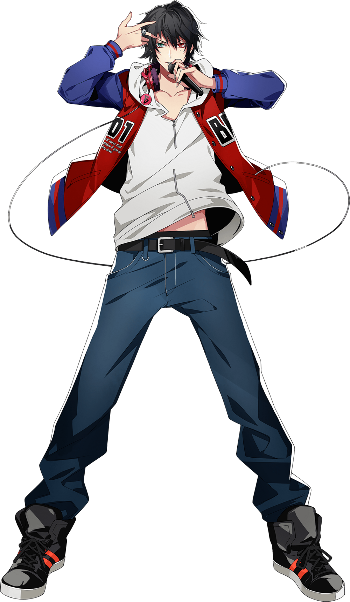
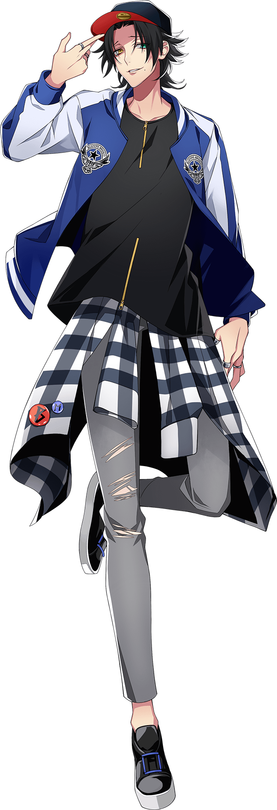
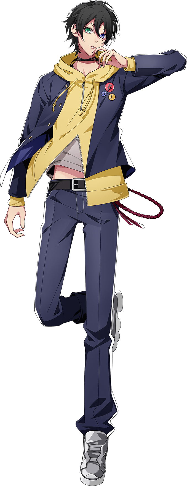

Buster Bros!!! is the Ikebukuro Division representative rap group. The group consists
of three Yamada brothers,
Saburo Yamada, Jiro Yamada, and their leader Ichiro Yamada.
The three brothers that are distinctly characterized by their co-ordination, producing clever words and
expressing the eldest
brother’s ideas with superior rhymes.
Ichiro Yamada

Ichiro Yamada, a.k.a. MC.B.B, is the manager of Odd-Jobs Yamada, former member of Naughty
Busters,
Mad Comic Dialogue and The Dirty Dawg and the current leader of Buster Bros!!!.
He is a former member of The Dirty Dawg, the oldest son of the Yamada family, and proprietor of Odd Jobs
Yamada.
He used to be such an infamous delinquent that it was said that there wasn’t a single person in Ikebukuro
who didn’t know his name.
He’s a very compassionate person with a deep-seated sense of justice who can’t bring himself to ignore
people in need.
Everyone admires him for how well he looks after his little brothers. As a hardcore nerd, his hobbies
include watching
anime and keeping up with all the latest light novels.
He and Samatoki Aohitsugi, leader of the Yokohama Division, hate each
other’s guts.
“ You'll never find a rainbow if you're looking down. ”
Solos
Jiro Yamada

Jiro Yamada, a.k.a. MC.M.B, is a high school student, a part-timer at the Odd-Jobs Yamada and the second
member of Buster Bros!!!.
Second son of the Yamada household and Buster Bros!!!. A strong fighter. He idolizes Ichiro Yamada, who is
beloved by everyone.
He grew up watching his big brother's back, and thus became a delinquent like him.
Just like Ichiro, he hates bullies. Due to his big brother's influence, he is well-versed in anime and light
novels.
Anyone who makes fun of his big brother will be crushed out (or will be devoured) and he always fights with
Saburo Yamada.
“ We don’t stop playing because we grow old; we grow old because we stop playing.
”
Solos
Saburo Yamada

Saburo Yamada, a.k.a. MC.L.B, is a middle school student, a part-timer at Odd-Jobs Yamada and the third
member of Buster Bros!!!.
Third son of the Yamada household and the youngest in Buster Bros!!!. A genius-type who can do just about
anything. Unlike his brothers, not a delinquent.
Respects and looks up to Ichiro. Thought about becoming a delinquent at first, but after Jiro became the one
to follow in Ichiro's footsteps, he decided against it.
Generally has good behavior, but will ridicule someone the moment he thinks they are beneath him. His
hobbies are board games and card games.
Because of his twisted personality, he doesn't have many friends. Wants someone he can always be together
with.
“ Everything that rises sets, and everything that grows, grows old. ”
Solos